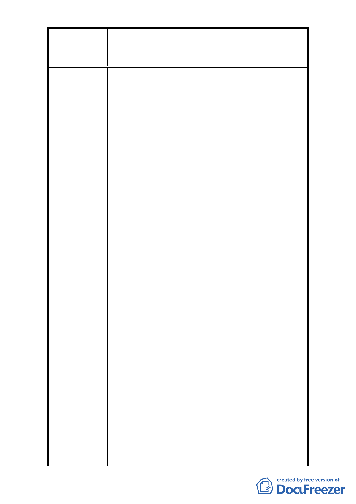

修訂臺北市大安區青田街保存區聚落風貌保存專用區細部計
案
名
畫、變更部分第三種住宅區、第三種商業區(特)為第三種住宅區
(特)(日式宿舍)及第三種商業區(特)(日式宿舍)暨劃定週邊地
區都市設計管制細部計畫案
編 號 32 陳情人 孫利銳
◎陳情理由
市長先生鈞鑒：
歡逢百年國慶！國父及先賢先烈以智慧、熱血換來之
中華民國，得來不易，今日偏海島之一隅，應記取國
恥。
郝總長乃國家干城，功在黨國，市長為名將之後，今
膺要職，貴為臺北市長，權責擁護黨國之復興維護中
華道法文化，遵循國父建國方針，三民主義，發展臺
灣為光復華夏文化，改良民眾生活為邦本，台島光復
已六十幾年，日寇治台，遺毒至今到處觸目傷心，郁
慕明說的好，台獨志在消滅中華民國。
貴府臺北都市計畫委員會，竟然欠考慮，竟欲保護老
陳 情 理 由 舊蟲蛀破損之日本老宿舍，維修費數十年，浪費公幣
至巨，拉垮國家財政，腐敗思想、國父遺教，民主、
民享、民權凋敝，貧富懸殊，盜賊黑道，詐騙集團，
天災人禍，天天都有所聞，官商交結，社會笑貧不笑
娼，多少公家土地荒廢，只要有權有勢，皆可享受官
場文化，上下交征利，其國危矣，請看今日美國，肥
貓坐享富貴，99百姓應來聯合抗爭，此為國家及百姓
之率敗現相，請以民生為重，青田街區域不大，自62
年拓寬和平東路，民生市場被拆後，分散集中購買場
所，剩泰順街小部分攤販，附近百姓購日用品，須轉
往東門、南門、古亭、龍泉、等市場買日用品，年青
人今騎摩托車尚可，中老年之人要買生活日用之物，
頗為不便。
市府執事諸公，重新考慮，興利革弊，蓋一較整潔之
民生商場，以安置四鄰百姓之生活方便，不要劃保護
破舊宿舍、養蚊蟲、白蟻、蟑螂，要哈日的人直接去
建 議 辦 法 日本參觀，中華民國之官員要為國民生活著想，請不
忘國恥，草此奉陳，順祝中華民國萬歲，鈞座執事諸
公，政躬康泰。
1. 龍安里青田社區發展協會向本府申請指定該區 35
市府回覆意見
處日式宿舍為古蹟，以整體保存本區日式宿舍群落
風貌。本府文化局業於 93 年起依文資法及相關法
令邀請文資委員進行本區域之文資價值鑑定，並於
- 39 -